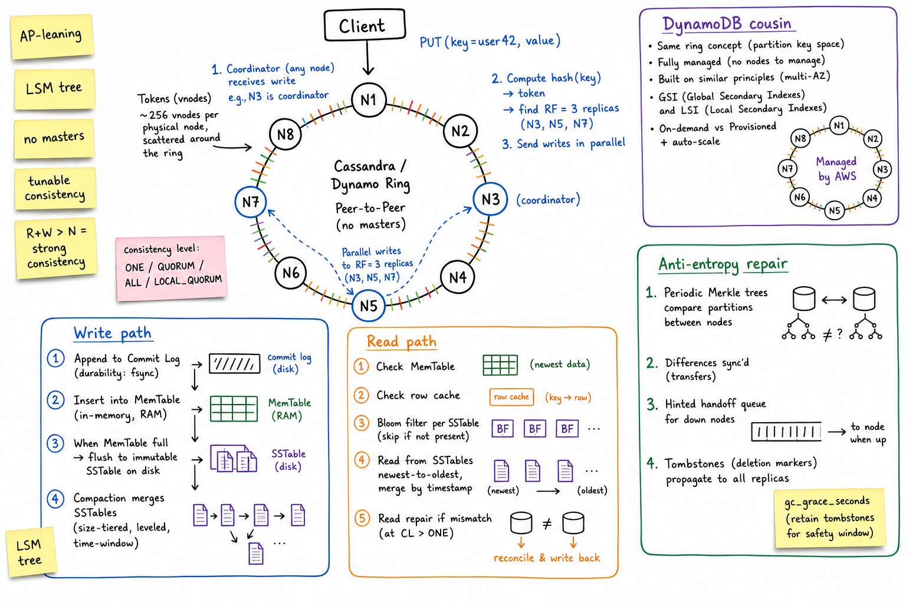
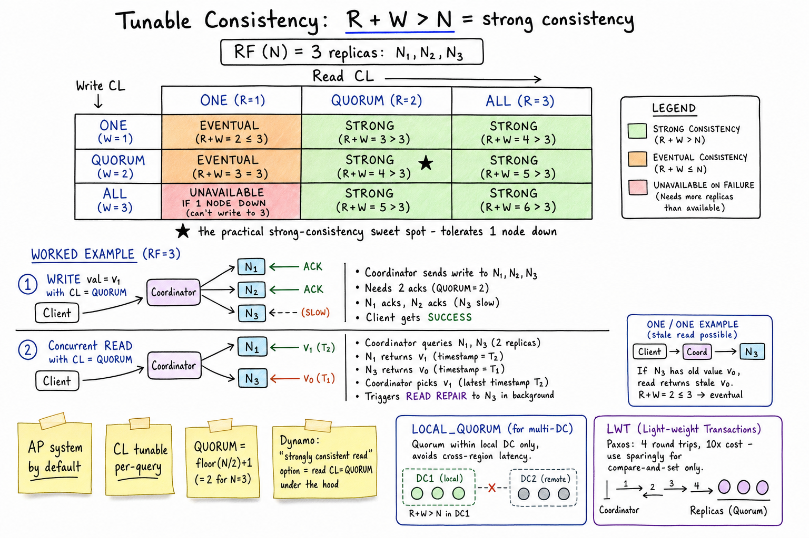

Cassandra / DynamoDB // Deep Dive
AP-leaning wide-column NoSQL, horizontally scalable, LSM-backed, with tunable consistency. Cassandra is the open-source peer-to-peer ring; DynamoDB is the managed AWS cousin with the same DNA and a strong-consistency knob.

Whiteboard architecture: peer-to-peer ring with vnodes; client writes to any node as coordinator; hash(partition_key) selects RF replicas; writes go to commit log + MemTable, flushed to immutable SSTables, then compacted. Reads merge MemTable + SSTables newest-to-oldest with Bloom filters. Anti-entropy via Merkle trees and read repair. DynamoDB shares the ring concept but is fully managed.
01 — Identity
Cassandra is a distributed, AP-leaning wide-column store. There are no masters — every node is a peer in a hash ring, every node can take any read or write as coordinator. Replication factor and consistency level are tuned per request. Storage uses an LSM tree (Log-Structured Merge): writes are appended to a commit log + MemTable, periodically flushed to immutable SSTables on disk, then compacted in the background. The result: huge write throughput, predictable horizontal scale, but you must model your tables for the queries you'll run.
DynamoDB is the managed cousin: same architectural ideas (ring, partitioning by key, replication across AZs), but Amazon runs it. You don't pick nodes, you pick capacity. It adds knobs Cassandra doesn't have out-of-the-box (strongly consistent read option, transactional writes across items, on-demand auto-scaling) and removes ones Cassandra has (you can't tune compaction strategy, can't SSH into nodes).
Reach for one of these when you need write throughput beyond what an RDBMS gives, predictable single-digit-ms latency at scale, and the data model fits one or a few access patterns per table. Reach past them when you need joins, multi-row ACID, or rich ad-hoc queries.
01a — Core Concepts
| Term | Definition | Notes |
|---|---|---|
| Partition key | Component of the primary key that decides which node owns the row. | Hashed (Murmur3 in Cassandra) → token → ring position. |
| Clustering key | Sort order within a partition. | Lets you do range scans within one partition cheaply. |
| Replication factor (RF) | How many replicas of each partition exist (typically 3). | Set per keyspace; mostly fixed. |
| Consistency Level (CL) | How many replicas must respond per request. | ONE, QUORUM, ALL, LOCAL_QUORUM, etc. |
| vnodes | Many virtual tokens per physical node (default 256). | Spreads ownership evenly; helps rebalance on node add/remove. |
| Gossip | Peer-to-peer protocol for cluster state. | Each node knows ring topology, schema, health. |
| Hinted handoff | Coordinator stores writes meant for a temporarily down replica. | Delivered when replica returns. Bounded; not a replacement for repair. |
| Read repair | Mismatch detected during a read → coordinator writes latest value back. | Foreground for CL > ONE; background async otherwise. |
| Anti-entropy | Periodic Merkle tree comparison to sync replicas. | Run as scheduled repairs. |
| SSTable | Sorted String Table — immutable on-disk file. | Append-only; compacted to remove tombstones/duplicates. |
| MemTable | In-memory write buffer. | Flushed to SSTable when full or on schedule. |
| Commit log | Append-only WAL for crash recovery. | fsynced per commitlog_sync setting. |
| Tombstone | Deletion marker. | Lives until gc_grace_seconds + compaction. |
| LWT | Light-Weight Transaction — compare-and-set via Paxos. | 4 round trips; ~10× cost of a normal write. |
01b — API / Wire Surface
CQL (Cassandra)
-- Looks like SQL, isn't. No joins. No subqueries. No aggregates without GROUP BY on partition key. CREATE TABLE events_by_user ( user_id uuid, ts timeuuid, event_type text, payload text, PRIMARY KEY ((user_id), ts) -- partition key = user_id, clustering = ts ) WITH CLUSTERING ORDER BY (ts DESC); INSERT INTO events_by_user (user_id, ts, event_type, payload) VALUES (uuid(), now(), 'click', 'x') USING TTL 2592000; -- 30 days SELECT * FROM events_by_user WHERE user_id = ? AND ts >= ? AND ts < ? -- partition + range on clustering LIMIT 100; -- Compare-and-set (LWT, Paxos) UPDATE accounts SET balance = 100 WHERE id = ? IF balance = 50; -- Counter column UPDATE views SET n = n + 1 WHERE post_id = ?;
DynamoDB API
// JSON over HTTPS; partition key + optional sort key required on every read
GetItem { Key: { pk: "user#42", sk: "profile" }, ConsistentRead: true }
PutItem { Item: { pk, sk, ... }, ConditionExpression: "attribute_not_exists(pk)" }
Query { KeyConditionExpression: "pk = :p AND sk BETWEEN :a AND :b" }
Scan { ... } // last resort; reads whole table
TransactWriteItems [ Put, Update, ConditionCheck ] // up to 100 items, ACID
UpdateItem { UpdateExpression: "SET balance = balance - :amt", ConditionExpression: "balance >= :amt" }
// Streams (CDC) - DynamoDB Streams → Lambda / Kinesis
Cassandra's CQL looks like SQL but the rules are different: you can only filter efficiently by partition key, plus range on clustering columns. Anything else needs a different table or a secondary index (don't).
02 — When To Use / When NOT
| Use when… | Avoid when… |
|---|---|
| Write throughput > tens of thousands TPS sustained | You need joins, ad-hoc analytics, or cross-row ACID |
| Predictable point-lookup or range-by-partition access | Access pattern unknown or changes often — can't remodel cheaply |
| Append-heavy time-series (sensor data, audit logs, events) | Strongly consistent reads required for everything — pay a real cost |
| Multi-region active-active with tunable consistency | Working set is tiny and an RDBMS is plenty |
| You want a simple op story (Cassandra: peer-to-peer; Dynamo: managed) | Heavy secondary indexes / complex query shapes — use Elastic, Spanner, etc. |
03 — Architecture (Internals)
Peer-to-peer ring
Every node is identical and equal. The ring is the token space (0 to 2&sup6;³−1 with Murmur3); each node owns many vnodes (small token ranges), giving even distribution and quick rebalance when nodes join/leave. Any node can take any request as coordinator: it computes the partition's replicas, forwards reads/writes to them, gathers responses per the CL, and replies to the client.
Write path (LSM)
- Coordinator forwards the write to all RF replicas in parallel.
- Each replica: commit log append (fsynced per config) + MemTable insert (in-memory). Ack to coordinator.
- Coordinator returns success once
CLreplicas ack. - When MemTable hits a size or time threshold, it's flushed to a new immutable SSTable on disk.
- Background compaction merges SSTables, drops tombstones past
gc_grace_seconds, keeps newest cell value per key.
Read path
- Coordinator queries
CLreplicas. - Each replica reads from MemTable + row cache + SSTables newest-to-oldest, skipping SSTables whose Bloom filter says “not present”. Results merged by timestamp.
- Coordinator returns the latest value; for
CL > ONE, mismatches trigger read repair (write the latest value back to lagging replicas).
Compaction strategies (Cassandra)
| Strategy | Use |
|---|---|
| SizeTieredCompactionStrategy (STCS) | Write-heavy, append workloads (default historical). |
| LeveledCompactionStrategy (LCS) | Read-heavy, low read amplification; more write amp. |
| TimeWindowCompactionStrategy (TWCS) | Time-series with TTL — SSTables per time bucket, dropped wholesale at expiry. |
04 — Partition Keys: The One Thing You Must Get Right
The partition key decides which node owns the data and is the only practical way to look it up. Bad partition key = dead cluster.
Three properties of a good partition key
- High cardinality — many distinct values so load spreads evenly.
- Even access distribution — no single key takes 10× the traffic of others.
- Bounded partition size — ideally < 100 MB and < 100K rows per partition.
Anti-patterns
- Single hot partition:
PRIMARY KEY ((date), event_id)for global events — every write today goes to one node. - Unbounded partition:
PRIMARY KEY ((user_id), ts)for a user generating events for years — eventually that partition becomes a multi-GB monster nothing can read.
The fix: bucketing
-- Wrong: one partition grows forever. PRIMARY KEY ((sensor_id), ts) -- Right: bucket by time so each partition is bounded. PRIMARY KEY ((sensor_id, day_bucket), ts) -- day_bucket = '2026-05-20' -- read needs (sensor_id, day_bucket) tuple; for a range, query multiple buckets -- Wrong: hot single key. PRIMARY KEY ((today_date), click_id) -- Right: spread with a salt. PRIMARY KEY ((today_date, shard), click_id) -- shard = hash(click_id) % 16 -- read does 16 parallel queries
05 — Model For Queries, Not Entities
Relational thinking says: model entities, JOIN at query time. Cassandra/Dynamo say: there are no joins. You denormalise and create one table per query.
Example: a chat app
-- Query 1: get all messages in a room, newest first. CREATE TABLE messages_by_room ( room_id uuid, ts timeuuid, user_id uuid, body text, PRIMARY KEY ((room_id), ts) ) WITH CLUSTERING ORDER BY (ts DESC); -- Query 2: get all rooms a user is in. CREATE TABLE rooms_by_user ( user_id uuid, joined timestamp, room_id uuid, PRIMARY KEY ((user_id), joined, room_id) ); -- Same logical data, different physical tables, each one queryable in O(log N).
You write to multiple tables on each application-level event, accepting some duplication for fast reads. DynamoDB folds this into the “single-table design” school: one table with overloaded pk/sk patterns + Global Secondary Indexes to support additional access patterns.
The interview test: when asked “design Twitter with Cassandra”, the answer isn't one Users + Tweets + Follows table. It's one table per access pattern (home_timeline_by_user, tweets_by_user, ...) and the write fanout that keeps them consistent.

Zoom-in: R + W > N is the only rule you need to remember. Matrix of write CL × read CL with RF=3 shows when reads are strong (QUORUM/QUORUM is the sweet spot) vs eventual; worked example shows how a QUORUM read picks the latest value by timestamp from two replicas (one stale, one current) and triggers a read repair on the stale one. LOCAL_QUORUM for multi-DC; LWT (Paxos) for compare-and-set.
06 — Tunable Consistency: R + W > N
Consistency is set per request, not per cluster. The rule:
If R + W > N → read sees the latest write (strong). If R + W ≤ N → read might see stale (eventual).
| Level | Reads | Writes | Use |
|---|---|---|---|
ONE | 1 replica | 1 replica | Fastest; stale reads possible; for logs/metrics |
QUORUM | floor(N/2)+1 | floor(N/2)+1 | Practical strong consistency (RF=3 → both = 2) |
ALL | N | N | Strongest, but one slow/down replica makes the request fail |
LOCAL_QUORUM | QUORUM within local DC | QUORUM within local DC | Multi-DC sweet spot — no cross-region latency |
EACH_QUORUM | QUORUM in each DC | QUORUM in each DC | Strong across regions; rarely used (slow) |
What strong consistency really means here
Even with QUORUM/QUORUM, you don't get linearizability across operations — just monotonic-read-your-writes per key. Two concurrent writes still pick the latest by timestamp (last-write-wins). For true compare-and-set, you need LWT (next section).
07 — LWT, Counters, and the Limits Of LWW
Last-Write-Wins (default)
Concurrent writes to the same cell resolve by timestamp: highest wins, others discarded. This is fast and lock-free, but it means “balance = balance - 10” isn't safe — two clients reading 100, computing 90, and writing 90 will both succeed.
Light-Weight Transactions (Paxos)
UPDATE accounts SET balance = 90 WHERE id = ? IF balance = 100;
Implemented via a 4-round-trip Paxos protocol per write. ~10× the latency of a normal write, plus contention if multiple LWTs hit the same partition. Use sparingly — for actual compare-and-set: claim a username, transition a state machine, prevent a double-spend.
Counters
Counter columns (n = n + 1) work but have weird semantics: not idempotent (a retried increment can double-count), can't be used with TTL, replication is special. For accurate counts at scale, prefer event-sourced aggregation (write each event, batch-aggregate downstream) rather than counter columns.
DynamoDB's answer
DynamoDB has first-class conditional writes (ConditionExpression) and TransactWriteItems for atomic multi-item ACID writes — both are fully managed and don't have Cassandra's Paxos cost surfaced to you (they use their own internal coordination). They're the right tool when you need real concurrency control.
08 — Tombstones, TTL, and Why Deletes Hurt
Cassandra never updates in place. Delete = write a tombstone (a marker with a higher timestamp). Reads must read past tombstones to know a row is gone. Tombstones live for gc_grace_seconds (default 10 days) before compaction can remove them — the window during which a down replica must come back and learn about the delete, otherwise a zombie write could resurrect it.
Tombstone disasters
- Range deletes on a giant partition write one tombstone per cell; reading that partition becomes O(tombstones).
- TTL on time-series with size-tiered compaction: SSTables interleave live cells with tombstones; compaction can't drop them. Use TWCS so whole SSTables for expired windows drop in one go.
- Tombstone overwhelm: queries trip
tombstone_warn_threshold(1000) andtombstone_failure_threshold(100K) — the latter throws and you get pager.
TTL the right way
- Pick a clustering key that lets TTL'd data live in time-bucketed partitions.
- Use TWCS for pure time-series.
- Avoid mixing long-lived and short-lived data in the same partition.
09 — Anti-Entropy & Repair
Three mechanisms keep replicas in sync:
- Hinted handoff — when a replica is briefly down, the coordinator stores its writes locally and replays them when the replica returns. Bounded (default 3 hours); not a guarantee.
- Read repair — mismatches detected during a CL > ONE read are written back to lagging replicas as a side effect.
- Anti-entropy repair — scheduled
nodetool repairruns that build Merkle trees per token range and stream missing data between replicas.
You must run repair on a schedule — less than gc_grace_seconds — or deleted data may “come back” if a replica missed the tombstone and the tombstone has been compacted away on the others. This is the single most common Cassandra production bug.
Modern Cassandra adds incremental repair (only repair what changed) and Reaper orchestrates it across the cluster.
10 — Secondary Indexes (Don't)
Cassandra has secondary indexes (CREATE INDEX). They look like SQL indexes but behave very differently: each index lives per node, so a query against a non-partition-key column has to scatter-gather to every node in the cluster. Acceptable for low-cardinality, debugging, admin queries; a perf cliff for anything in the hot path.
Alternatives
- Denormalised query table — just store the data again, indexed by the field you want. Right answer 90% of the time.
- Materialised views — Cassandra maintains a denormalised table automatically. Historically buggy; treat with caution.
- SAI (Storage-Attached Index) — newer, more efficient secondary index for Cassandra 5.0+. Better but still bound by the scatter-gather model.
- DynamoDB GSI/LSI — first-class, eventually consistent secondary indexes that are actually scalable. The right way to support multiple access patterns in Dynamo.
11 — DynamoDB-Specifics Worth Knowing
Capacity modes
| Mode | How | Use |
|---|---|---|
| On-demand | Pay per request; auto-scales instantly | Unpredictable traffic, spiky workloads, dev/test |
| Provisioned | Buy N read/write capacity units; auto-scaling adjusts | Steady, predictable; cheaper at scale |
Hot partitions, throttling, adaptive capacity
If one partition key gets > ~3000 RCU or 1000 WCU, Dynamo throttles. Adaptive capacity now silently rebalances unused budget toward the hot partition, but the fundamental lesson holds: spread your access. Write-sharding (append a suffix bucket to the key) is the standard fix for unavoidable hot keys.
GSI vs LSI
- LSI (Local Secondary Index) — same partition key, different sort key. Strongly consistent reads possible. Defined at table creation only.
- GSI (Global Secondary Index) — different partition key. Eventually consistent. Independent capacity. Add/remove anytime.
DynamoDB Streams
Built-in CDC: every item-level change is appended to a 24-hour stream. Trigger a Lambda, fan out to Kinesis, build search indexes, replicate cross-region (DynamoDB Global Tables uses Streams under the hood).
Transactions
TransactWriteItems gives ACID across up to 100 items in one or many tables. Costs 2× the normal WCU but is real ACID — use for state-machine transitions where you must atomically update multiple items.
12 — Operational Concerns
Cassandra sizing
- Plan for < ~2 TB per node (compaction needs spare disk equal to largest SSTable group).
- RAM = JVM heap (24-32 GB max, G1GC) + off-heap (row cache, bloom filters) + OS page cache.
- Network: cross-node fetches dominate; 10 GbE recommended.
- Disk: prefer SSD/NVMe — LSM writes are sequential but reads can be very random.
Metrics that matter
| Metric | What it tells you |
|---|---|
| Read/Write latency p99 per CF | SLO tracking; spikes during compaction or repair |
| Pending compactions | If climbing, write rate > compaction throughput → tune or add nodes |
| Tombstone count per slice | Approaching tombstone_failure_threshold = query failures coming |
| SSTables per read | Read amplification; tune compaction strategy |
| Hints pending | Replica down longer than expected |
| Repair age per range | Must be < gc_grace_seconds |
DynamoDB monitoring
- ConsumedReadCapacityUnits vs provisioned → throttle risk.
- ThrottledRequests per table/index → hot partition.
- SuccessfulRequestLatency p99.
- Account-level limits — total table capacity per region, table count.
Classic failures
- Repair lapse → deleted data resurrects after
gc_grace_seconds. Schedule repairs, page on lapse. - Hot partition → one node CPU-pegged. Resharding/key change required.
- Tombstone overload → queries fail. Re-model with TWCS or different partition layout.
- Compaction can't keep up → SSTables per read explode, read latency degrades. Add nodes or tune throughput.
- DynamoDB hot key throttling → write sharding or migrate the access pattern.
13 — Usage Patterns (Cross-Links)
- Key-Value Store — the canonical “design a Dynamo” problem; this is its concrete embodiment.
- Notification logs — delivery records keyed by (user_id, day_bucket) with TTL; Cassandra absorbs the write firehose.
- FB Live comment archive — comments_by_stream with TTL; the durable tier behind the Redis recent-comments cache.
- Ad click historical store — raw click events partitioned by (ad_id, day_bucket) for backfill / re-aggregation.
- Job execution history — append-only (job_id, attempt) rows with TTL; Postgres holds the live state, Cassandra holds the audit log.
- Uber trip events — per-trip event log + per-driver location history both fit the wide-column shape.
14 — Alternatives
| System | Pick when… | Trade-off |
|---|---|---|
| ScyllaDB | You want Cassandra's API and model with C++ + shard-per-core architecture (often 5-10× throughput) | Smaller community; need to verify driver/feature parity |
| HBase | You're in Hadoop ecosystem; you want stronger consistency on reads | HDFS dependency; HMaster SPOF historically; ops complexity |
| Google Bigtable | GCP, massive scale, strong consistency per row | GCP-only; pay-per-node; limited query model |
| Google Spanner / CockroachDB / YugabyteDB | You actually need CP, ACID across rows, joins, and SQL | Higher write latency; expensive at very high scale; more complex internals |
| MongoDB | Document model with secondary indexes and rich query needs | Different tradeoffs — single primary per shard, weaker write throughput than C* at scale |
| Elasticsearch / OpenSearch | Free-text search, aggregations, ad-hoc queries | Not a primary store; eventual consistency; resource-heavy |
15 — Interview Q&A
Why does Cassandra have no masters?
Explain R + W > N in your own words.
What's an LSM tree and why use it?
How do you choose a partition key?
Walk me through a tombstone problem.
gc_grace_seconds (default 10d) before compaction can drop them; that's the window for offline replicas to receive the delete. Bad patterns: range deletes on huge partitions (one tombstone per cell), TTL workloads with size-tiered compaction (tombstones interleave with live cells, can't be dropped). Symptoms: queries trip the tombstone-failure threshold (100K) and start erroring. Fix: model partitions to be bounded, use TWCS for time-series, run repair on schedule.Why are secondary indexes “don't”?
When would you use LWT?
What goes wrong if you don't run repair?
gc_grace_seconds. Next time the lagging replica answers a read, its live copy of the “deleted” row beats the absence on the others — the deleted data resurrects. The contract: run repair on every node within gc_grace_seconds. Reaper or scheduled nodetool repair jobs are mandatory.How do Cassandra and DynamoDB differ in practice?
TransactWriteItems), strongly consistent reads on demand, GSI/LSI that just work, point-in-time recovery. Cassandra is more flexible (any cloud, customise everything), Dynamo is simpler if you're in AWS. Both reward identical data-modelling thinking.How do you fix a hot partition?
nodetool tablestats, Dynamo: hot partition metric). Then re-model. Time-bucket the partition key ((sensor, day)) so the hot key is bounded. Add a salt/shard suffix ((today, shard0..N)) and let readers fan out N reads in parallel. For genuinely required ordering on one key, accept dedicated hardware or move the access pattern to a different store (Redis, Elasticsearch). Never just throw nodes at it — the cluster grows but the hot node stays hot.